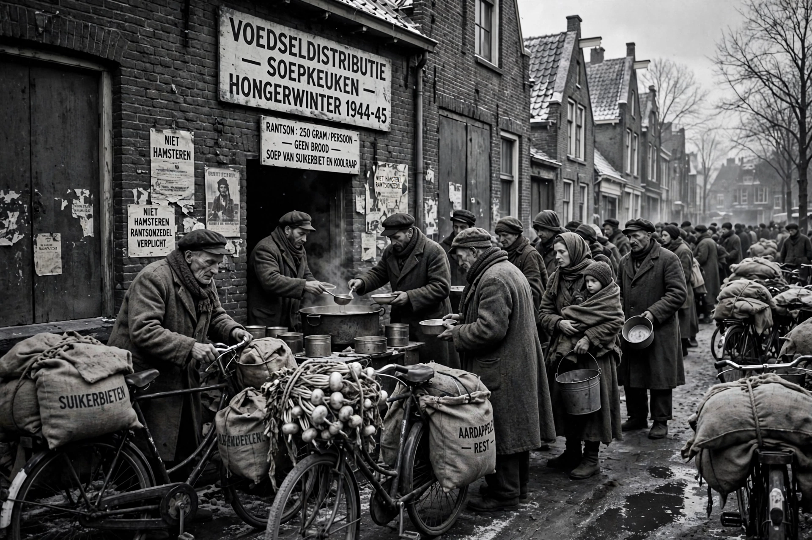

The Dutch famine of 1944–1945, known in Dutch as the Hongerwinter (Hunger Winter), was a famine that took place in the German-occupied Netherlands during a severe winter at the end of the Second World War. A German blockade cut off food and fuel shipments after a Dutch railway strike in support of the Allied advance.

Dutch famine of 1944–45Official rations in the western cities fell as low as 400–800 kilocalories per day. People ate tulip bulbs and sugar beets, and travelled to farms to barter for food. The famine ended with liberation in May 1945 and Allied food drops, including Operations Manna and Chowhound.
The cohort exposed in utero has been intensively studied: prenatal famine exposure was associated with higher rates of obesity, cardiovascular disease, diabetes and schizophrenia in later life, and with epigenetic changes such as altered methylation of the IGF2 gene — a landmark example of developmental origins of health and disease.